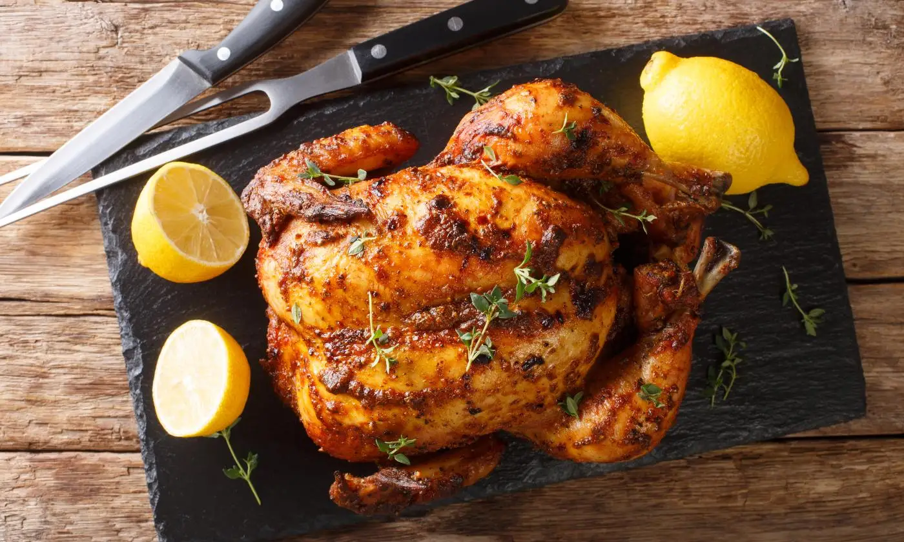

Pollo a la Brasa

Descripcion
El pollo asado, rostizado, en brasas o a la brasa es un plato genérico elaborado con un pollo expuesto directamente al fuego, que puede provenir de un hogar casero, hasta el asador profesional rotatorio.
El pollo es uno de los ingredientes más utilizados en la cocina, esta carne blanca se convierte en una de las mejores alternativas para el consumo de proteína de origen animal, ya que es más económica en comparación con las otras proteínas, es muy versátil pues podemos preparar con el pollo una infinidad.
Ingredientes
- 4 cuartos de pierna enteros , con piel
- 1/4 taza de aceite de oliva, dividido
- Condimento para bagels Everything (como el de Trader Joe's ® ) según sea necesario
- 6 dientes de ajo pelados y machacados ligeramente, o más al gusto
- 1/2 lata o botella de cerveza lager
- 2 cucharadas de salsa condimentada Maggi ®
- 1/2 barra de mantequilla salada de alta calidad
Pasos
- Paso 1: Precaliente el horno a 400 grados F (200 grados C).
- Paso 2: Comience por quitar el exceso de grasa de los cuartos traseros. Séquelos y pincele toda la superficie con aproximadamente la mitad del aceite de oliva. Espolvoree generosamente ambos lados con Everything Bagel Seasoning
- Paso 3: Calienta las 2 cucharadas restantes de aceite de oliva en una sartén apta para horno a fuego medio y dora el pollo con la piel hacia abajo hasta que se dore, de 4 a 6 minutos. Da vuelta el pollo y dora el otro lado durante 2 minutos más.
- Paso 4: Apaga el fuego y vierte con cuidado la cerveza alrededor de las patas de pollo en los costados de la sartén, teniendo cuidado de no verterla directamente sobre la piel crujiente. Agrega dientes de ajo machacados ligeramente y rocía la salsa condimentada en la sartén. Coloca trocitos de mantequilla sobre el pollo y transfiere la sartén al horno.
- Paso 5: Asar en el horno precalentado hasta que el pollo esté bien dorado, de 40 a 45 minutos.
- Paso 6: Sirva con los jugos de la sartén rociados sobre el pollo.